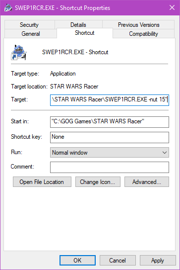

First off you gotta install the Radmin VPN.
then install it. In the app, go to Network at the top, then Join an Existing Network.
Network name is queenkjuul
password is in the discord server
it is available here
the game was written in the days of dialup, so we need to give tell the game to use more bandwidth or else movement online will be all jerky
the easiest way to do this is to create a shortcut which will tell the game to run with different options.
right-click SWEP1RCR.EXE and select "Create Shortcut"
right-click the new "SWEP1RCR.EXE - Shortcut" file and select Properties
in the "Target" box, add -nut 15 to the end of the line. You need a space after the .EXE part, and put it inside the quotes. Mine reads like:
"C:\GOG Games\STAR WARS Racer\SWEP1RCR.EXE -nut 15"
